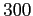
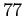

GNU Archimedes is a semicondutor device simulator in a quite general context. So when you simulate a new device, you have to specify the lattice temperature. If the user does not specify this value, the room temperature will be taken as default (i.e.  Kelvin degrees). All the temperatures are given in Kelvin. So if the user deal with a cryogenic device, i.e. working at  Kelvin degrees, he have to specify the following row in the input file
LATTICETEMPERATURE 77